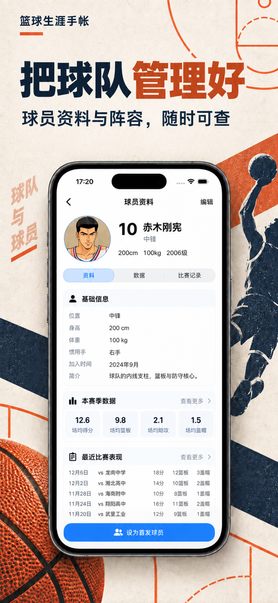
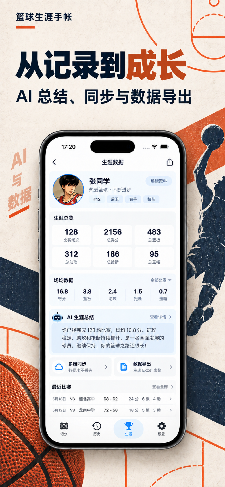
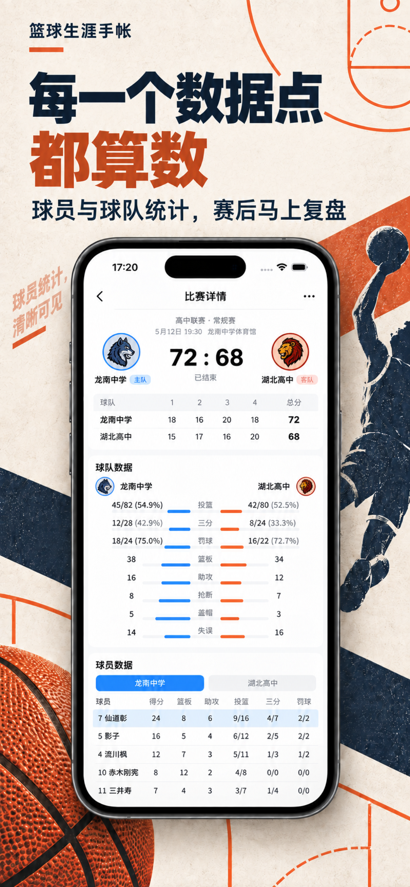

VIS 视觉设计师：设计图 vs 实际 UI
参考资产来自 fastlane/screenshots/zh-Hans/iPhone 6.5-inch/；实际资产来自 iPhone 17 Simulator。对比重点是共享风格，不把记分操作页纳入改造。
共享视觉结论
- 纸张米白底、深海军蓝标题、橙色强调、浅蓝信息卡均在实际 UI 中保持一致。
- 管理页和设置页使用真实系统大标题、分组卡片与底部导航；职业页使用同一套卡片、数字指标和分段选择器。
- 发现并修正了 iOS 27 下导航栏背景配置导致大标题变白的问题；最终截图中的标题已恢复为深色。
逐项证据




